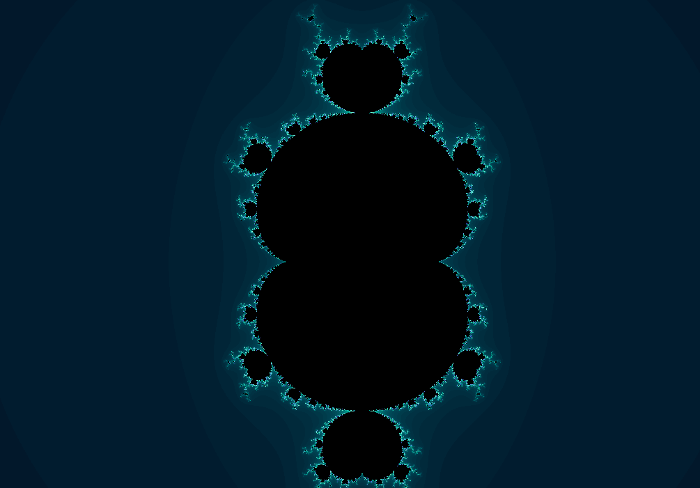
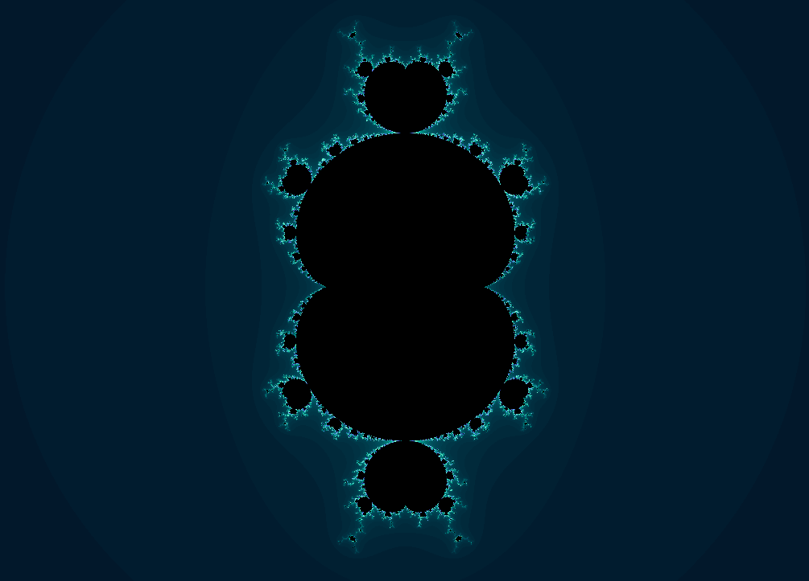
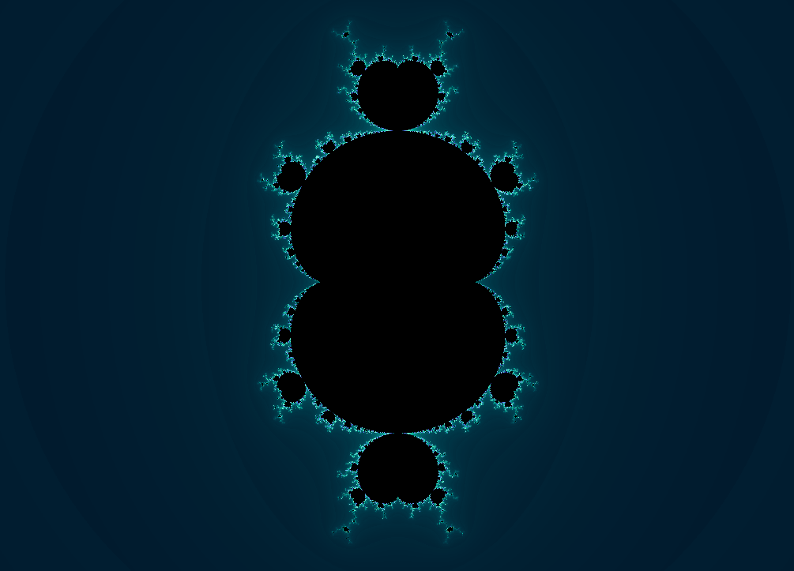
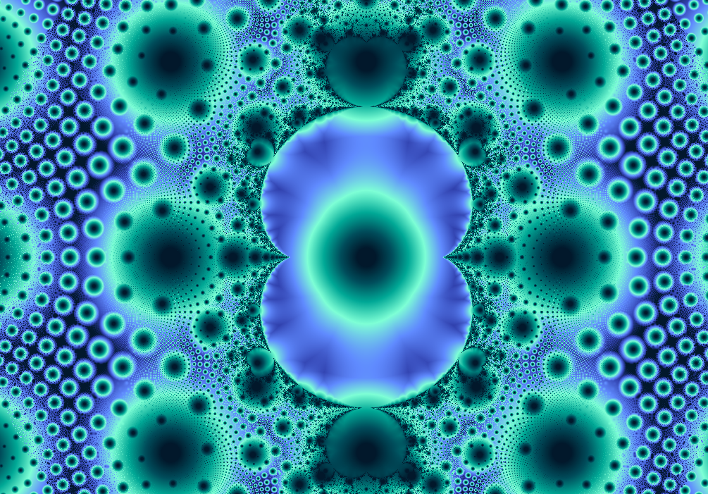
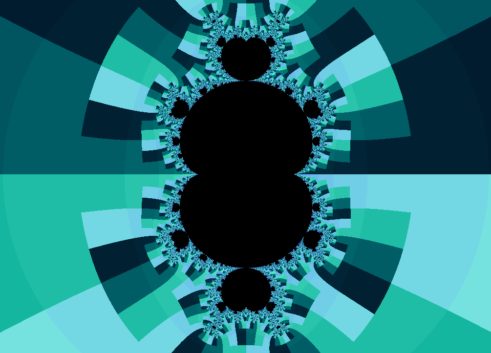
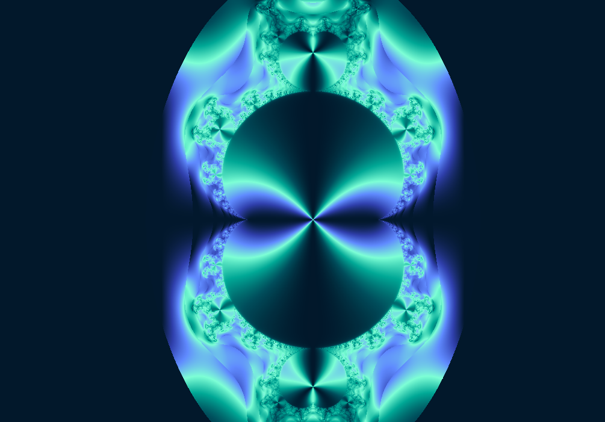
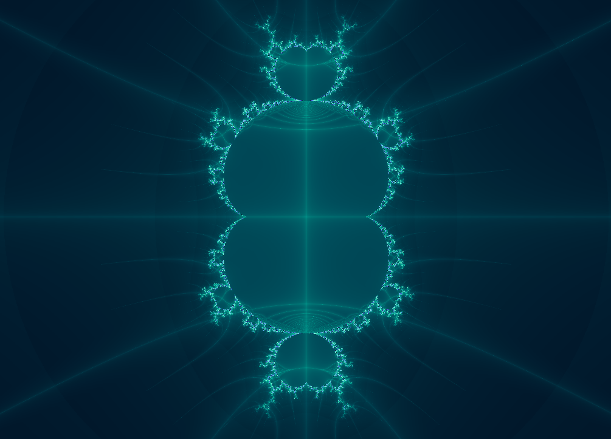

Fractal gallery
Mandelbrot Z^m
The Mandelbrot idea with the exponent unlocked.
\(z_0=0,\quad z_{n+1}=z_n^m+c\)
This fractal asks what happens when the classic square becomes \(z^m\). The answer is a family of maps with more lobes, new symmetries, and similar boundary complexity.

What to try first
Change the exponent and zoom out enough to read the whole silhouette. Count the major arms before zooming in.
Toggle Julia mode and move the selected parameter across the boundary. The Julia view is the quickest way to feel what the parameter map means.
Compare escape time with smooth coloring. Higher powers can create strong bands that smooth coloring turns into gradients.
Mathematical notes
From \(z^2+c\) to \(z^m+c\)
The classic Mandelbrot set uses \(z_{n+1}=z_n^2+c\) with \(z_0=0\). Mandelbrot Z^m changes the exponent: \(z_{n+1}=z_n^m+c\). Use Change m to open View > Fractal options and choose the exponent.
Coloring lenses
The set stays the same, but each rendering method asks a different question about the orbit.


Gaussian integer
Measures how closely escaping orbits pass near the complex integer lattice.
Apply in wxChaos

Triangle inequality
Turns relationships inside the orbit into layered, topographic texture.
Apply in wxChaos
Orbit traps
Colors points by how closely their orbits pass near the real and imaginary axes.
Apply in wxChaos